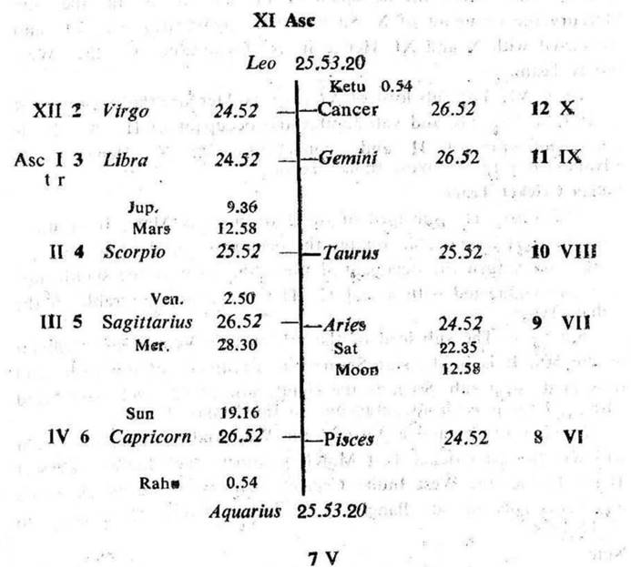

Question. Whether my cousin sister is pregnant?
Number. 101 (out of 249)
Place of Judgment. 23°N 2′, 72°E 35′.
Time of Judgment. 2-2-1971, Tuesday; 8-15 A.M. I.S.T.

1. If the cuspal sub lord of the 5th:
(a) occupies the fruitful sign Cancer, Scorpio or Pisces and
(b) is the significator of 2, 5 or 11 the woman concerned is pregnant.
2. If the cuspal sub lord of the 5th:
(a) occupies the barren sign Aries, Gemini, Leo or Virgo and
(b) is in the star of the planet in the barren sign, then the woman concerned is not pregnant.
The querent put the query for his uncle's (his father's younger brother's) daughter. The 9th house denotes the querent's father, the 11th his uncle; so the 3rd house becomes the Asc. of the cousin sister. For convenience the roman letter is given to each house counted from the 3rd cusp, so proceed accordingly.
In this horary map Moon is in conj. with Saturn owning V (pregnancy to the sister). Thus it clearly shows that the query refers to the pregnancy of the sister.
Cusp V. The sub lord of V cusp is Ketu. It is in its own star (Ketu) which is in the barren sign Leo in X. So Ketu is the Significator of X. Ketu as the sub lord of V cusp and as its own star lord is in the barren sign. Moreover Ketu itself is not favourable for conception. Hence the querent's cousin sister is not pregnant at the time of judgment.
In females Moon denotes fertility. In this case Moon is in conj. with Saturn the obstructor in the barren sign Aries. So the querent's cousin sister is not pregnant at the time of judgment.
Later on, in the medical examination it was revealed that she was not pregnant.